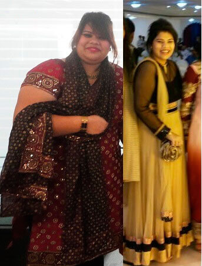
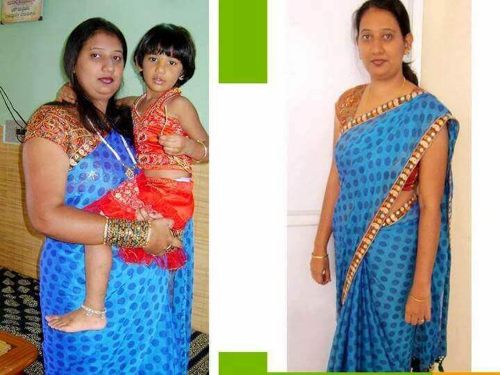

पोस्ट किया गया
भैरवी द्वारा
मैंने 55 किग्रा कैसे कम किए आहार पर बिना किसी प्रतिबंध और बिना व्यायाम के


सबसे पहले तो मैं बहुत उत्साहित हूँ क्योंकि यह मेरा पहला ब्लॉग है। मैं सौंदर्य समाचार हमेशा बहुत रुचि के साथ पढ़ती थी और वज़न घटाने की अपनी कहानी लिखने में मैं बहुत सम्मानित महसूस कर रही हूँ।
ख़ैर पहली बात पहले - मैं हमेशा एक बहुत गोलमटोल लड़की थी। हालांकि बचपन में मैं बहुत दुबली थी, पर जवानी ने सब गड़बड़ कर दी। आह, काश, मैं उन कॉकटेल पोशाकों में अपना ज़ीरो फ़िगर दिखा पाती, पर मेरे लिए बड़े होने का मतलब था मोटापा, मैं कभी अपने शरीर से खुश नहीं थी।
मुझे याद है स्कूल और कॉलेज में मैं बहुत डायटिंग करती थी और फिर असफल ही रहती थी। बड़े होते समय मैं जिस सबसे गुज़री उसके लिए निराशा शब्द पर्याप्त नहीं। मुझे हमेशा खाना पसंद था और उच्च अध्ययन के लिए घर से बाहर रहने पर खाने के प्रति मेरा प्यार और बढ़ गया। मैं मीडिया में काम करती हूँ, और इसमें काम का कोई निश्चित समय नहीं है। मेरे पहले काम में मुझे सुबह 6 बजे से रात को 11 बजे तक ऑफिस में रहना पड़ता था। इसलिए जंक फूड और अस्वस्थ रात्रि भोजन मेरे लिए मुख्य हो गए। मैं ऐसी दिखती थी।
मैंने जिम जाना और डायटिंग करना शुरू कर दिया जो मेरे लिए मुसीबत बन गए, क्योंकि मुझे खाना बहुत पसंद था। मेरे प्रशिक्षक ने मुझे स्पष्ट बता दिया कि मुझे हल्के व्यायामों से शुरू करना होगा, क्योंकि मेरा वज़न बहुत अधिक था और मैं जल्दी थक जाती थी।
जिम के परिणाम
जानते हैं 3 महीने तक जिम में व्यायाम करने और डाइटिंग करने के बाद मुझे क्या परिणाम मिला? कुछ भी नहीं! मैं परेशान हो गई। मैंने खाना लगभग बंद कर दिया लेकिन हर दिन जिम जाती रही। यह बहुत ही मुश्किल था। भूख से मुझे लगातार चक्कर आते रहते थे। जब भी मैं विशेष रूप से अस्वस्थ महसूस करती थी तो मैं पनीर का एक छोटा टुकड़ा खा लेती थी, इससे खुद को जीवन में वापस लाने में मुझे मदद मिलती थी। इस यातना के बाद मुझे कुछ परिणाम मिला। 2 सप्ताह के भीतर मेरा 3.5 किलो वज़न कम हो गया लेकिन यह उपलब्धि बहुत छोटी थी।
यह जीवनशैली मैं जारी रख सकती थी, अगर एक दिन मैं सीधे ट्रेडमिल पर ही बेहोश न हो जाती। इसके बाद अस्पताल में मेरी आँखें खुली और मेरे सिर पर ड्रिप की एक बोतल लटक रही थी। मैं भोजन में कंजूसी करती रही, क्योंकि नहीं चाहती थी कि मेरा बिलकुल भी वज़न बढ़े। मेरी डॉक्टर यह देखकर हैरान रह गई कि मैंने अपने साथ कैसा व्यवहार किया। उसने मुझसे कहा, '' प्रिय, इस तरह की जीवन शैली के साथ तुम बस कुछ ही महीने ज़िंदा रह पाओगी। अधिक वज़न सच में एक समस्या है पर उससे भिन्न तरीके से निपटना चाहिए। मैं तुम्हें एक विशेष उपाय बताऊंगी, जो तुम्हें भोजन से 30 मिनट पहले, दिन में 3 बार लेना होगा। मैं गारंटी देती हूँ कि तुम्हारा अतिरिक्त वज़न पूरी तरह गायब हो जाएगा।”
जो उपाय उसने मुझे बताया उसका नाम था । डॉक्टर ने मुझे बताया कि वज़न घटाने और मेटाबोलिज़्म में सुधार के लिए यह एक प्राकृतिक उत्पाद है। उन्होंने मुझे उस वेबसाइट का पता भी दिया जिस पर ऑर्डर करके मैं इसे मंगा सकती थी।
एक हफ्ते तक कॉफी पीने के बाद मेरा एक किलो भी वज़न कम नहीं हुआ। पर मेरा वज़न बढ़ा भी नहीं! भूखे रहकर जो वज़न मैंने हासिल किया था वह उतना ही बना रहा। इसका ध्यान रखते हुए मैं बिना जिम गए उसी तरह खाती रही, यह एक चमत्कार था।
14 दिनों के बाद मैं सच में हैरान रह गई। मैंने जो चाहा वह सब खाया, इसके बावजूद मेरा वजन 9.3 किलो कम हो गया था! मैं भूखी रहने और व्यायाम करने से थक चुकी थी... कूल्हे और पेट उल्लेखनीय रूप से कम हो गए - और मेरा मूड बेहतर हो गया! प्रतिबंधों के बिना सरल ढंग से वज़न घटाना! यह आश्चर्यजनक था! मैंने ध्यान दिया कि मेरे पूरे शरीर में सुधार आ रहा है। मेरा हाँफना बंद हो गया और मैं महसूस करने लगी कि मेरी ऊर्जा बढ़ रही है।
अगले 7 और दिनों में, मेरा वज़न 8.5 किलो और कम हो गया! 2.5 महीनों के दौरान मेरी वसा सचमुच तेजी से और आसानी से पिघल रही थी। मेरा वज़न इतनी तेजी से कम हो रहा था कि मुझे ढीली त्वचा से बचने के लिए फिर से जिम जाना शुरू करना पड़ा। पर अब वर्कआउट करना मुझे बहुत आसान लग रहा था।
जितना वज़न मैं चाहती थी वह तीन महीनों के अंदर ही प्राप्त हो गया। मेरा पेट गायब हो गया था। मेरा 55 किलो वज़न घट गया था, और मेरा शरीर ऐसा हो गया था, जिसकी मैं कभी कल्पना भी नहीं कर सकती थी! यह असली जीत थी!
अब मैं संक्षेप में बताना चाहती हूँ कि यह कैसे काम करता है - 100% प्राकृतिक सत , क्लोरोजेनिक एसिड।
1. ये जठरांत्र द्वारा अवशोषित कार्बोहाइड्रेट को कम करता है, जिससे रक्त प्रवाह में हानिकारक पदार्थों की मात्रा कम हो जाती है। इसलिए आप जो चाहें खा सकते हैं और हानिकारक पदार्थ आपके रक्त में नहीं जा पाते हैं।
2. ये घटक एडीपोनेक्टिन का उत्पादन बढ़ाते हैं, यह हार्मोन शरीर में चरबी जलाने का काम करता है।
3. ये रक्त में कॉलेस्ट्रोल और शुगर की मात्रा को सामान्य करते हैं।
4. विषैले पदार्थों को साफ़ करते हैं।
तीन महीने तक पीने के बाद मैं 55 किलो वज़न घटा पाई और अब मेरा वज़न 62 किलो है। इसकी लत भी नहीं पड़ती है। मैंने इसके दो कोर्स के बीच लंबा विराम दिया और लगातार ठीक महसूस करती रही। और हाँ, मेरा घटा हुआ वज़न वापस भी नहीं आया। अब मेरा वज़न 62 किलो ही बना है। अगर मैं यह कर सकी - तो कोई भी कर सकता है!
"मैंने ऑनलाइन यह बात जल्दी समझ ली कि लोग क्या ग़लतियाँ करते हैं," उसने कहा। "मैं सोचती... तुम ऐसा नहीं करना चाहोगे।"
ऑफ़ीशियल वेबसाइट
यहाँ पर लिंक दे रही हूँ की ऑफ़ीशियल वेबसाइट का, यह उन लोगों के लिए है जो मेरी तरह तेज़ी से और आसान ढंग से अपना वज़न घटाना चाहते हैं। आप लीजिए और अपने स्वास्थ्य व जीवन में सुधार लाइए। इससे होने वाले शक्तिशाली असर की तुलना में इसकी कीमत बहुत कम है। कृपया ध्यान दीजिए कि यह एकमात्र वेबसाइट है जिस पर आप असली उत्पाद का ऑर्डर कर सकते हैं। दूसरी वेबसाइट पर चीन में बना बेकार माल मिलता है, जिनका कोई असर नहीं होता है। ऐसी बहुत वेबसाइट हैं। जब मैंने ऑफ़ीशियल वेबसाइट पर का ऑर्डर किया तो मुझे किसी तरह का भुगतान नहीं करना पड़ा! मैंने अपना ऑर्डर मिलने पर ही पैसों का भुगतान किया। मैं यह भी बताना चाहूँगी कि मुझे डिलीवरी काफी जल्दी मिल गई। मुझे अगले ही दिन अपनी कॉफी मिल गई थी।
मैं डॉक्टर, प्रशिक्षक और बेशक, के समक्ष अपनी गहरी कृतज्ञता व्यक्त करती हूँ। मेरा वज़न इतना कम नहीं हुआ कि मैं दुष्पोषण की शिकार लगूँ। पर जिस लड़के को मैं पसंद करती थी वह मेरी ओर ध्यान देने लगा। हम अब साथ हैं और खुश हैं। आपके लिए शुभकामनाएँ कि आपको भी ऐसी ही खुशियाँ मिलें।
ध्यान देने के लिए आपको धन्यवाद। साभार, भैरवी।
टिप्पणियाँ:
कुंती
मेरा 19 किलो वज़न कम हो गया है की बदौलत। तुम्हारी तरह मैंने भी इसे लिया था: दो चम्मच सुबह और दो चम्मच दोपहर में। इससे वज़न से ज़्यादा आयतन पर बहुत फर्क पड़ता है!
भैरवी
वाह, कुंती! परिणाम बहुत ही ज़ोरदार हैं! प्रिय महिलाओ, मैं माफ़ी चाहूँगी कि आप सभी को जवाब नहीं दे पाई, पर मैंने सभी को पढ़ा है और कहना चाहूँगी कि आप लोगों की उपलब्धियों से मैं बहुत खुश हूँ और मुझे आप पर गर्व है!
पद्मिनी
यह बहुत पहले की बात है और अब यह बहुत हँसी की बात लगती है कि मेरा वज़न 69 किलो होता था... अब मेरा वज़न 54 किलो है और मैं कुछ भी करूँ या कुछ भी खाऊँ, यह बदलता नहीं है! मुझे अपनी प्रगति की तस्वीरें आपके साथ साझा करने में बहुत गर्व महसूस हो रहा है:
वर्षा
प्रिय भैरवी और यहाँ पर टिप्पणी लिखने वाली सभी लड़कियो! अपनी कृतज्ञता और खुशी जताने के लिए मेरे पास शब्द नहीं हैं... मैं 33 साल की हूँ, और अपने वज़न के कारण मेरे पिछले कुछ साल बहुत ही तकलीफ़ भरे थे। आसान से आसान व्यायाम भी मेरे लिए बड़ी चुनौती होते थे। मुझे पीठ में बहुत दर्द रहता था, जल्दी ही कमज़ोर और थकी हुई महसूस करती थी... मैंने आपकी पोस्ट पढ़ी और तय किया कि आजमा कर देखूँगी - और परिणाम मेरी उम्मीदों से बहुत ही बढ़िया निकले! अब मेरा वज़न 63 किलो है - पर पहले यह 91 किलो होता था! मैंने तीन महीनों में 28 किलो वज़न घटाया! मैं बहुत ही उत्साहित हूँ और 10 साल युवा दिखती हूँ! साँस की तकलीफ़ अब मुझे नहीं है और पीठ का दर्द भीअब ख़त्म हो गया है!
बूमति
वज़न घटाने के लिए मैं कोई चीनी चाय पीती थी, और इससे सच में मेरे 2 किलो कम हो गए, पर दो ही हफ्तों में ये दो किलो वापस आ गए (( कृपया मुझे बताओ क्या यही कहानी इस के साथ भी दोहरा सकती है?
भैरवी
हेलो, बूमति। चिंता मत करो, ऐसा नहीं होगा। इन सभी खूबसूरत महिलाओं की और मेरी तस्वीरें देखो - हमारा वजन तेज़ी से घटा और अभी तक वापस भी नहीं आया है! क्लोरोजेनिक एसिड सच में काम करता है और यह शरीर को चरबी की वापसी पर नियंत्रण रखने में मदद करता है। तुम को बस एक हफ्ते तक दिन में 2 बार लेने का प्रयास करो तुम्हें तुरंत परिणाम दिख जाएंगे!